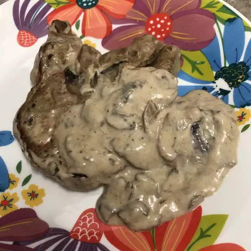

Mushroom Pork Chops
Pork chops with cream of mushroom soup are quick and easy, but very delicious. One of my family's favorites served over brown rice.

Ingredients
- 4 pork chops
- salt and pepper to taste
- 1 pinch garlic salt, or to taste
- 1/2 pound fresh mushrooms, sliced
- 1 onion, chopped
- 1 (10.75 ounce) can condensed cream of mushroom soup
Steps
-
Step 1
Season pork chops with salt, pepper, and garlic salt.
-
Step 2
Brown chops over medium-high heat in a large nonstick skillet. Add mushrooms and onion and sauté for one minute.
-
Step 3
Pour soup over chops. Cover, reduce the heat to medium-low, and simmer until chops are cooked through, 20 to 30 minutes.